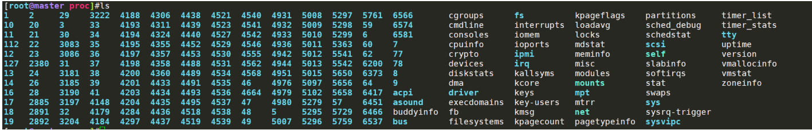
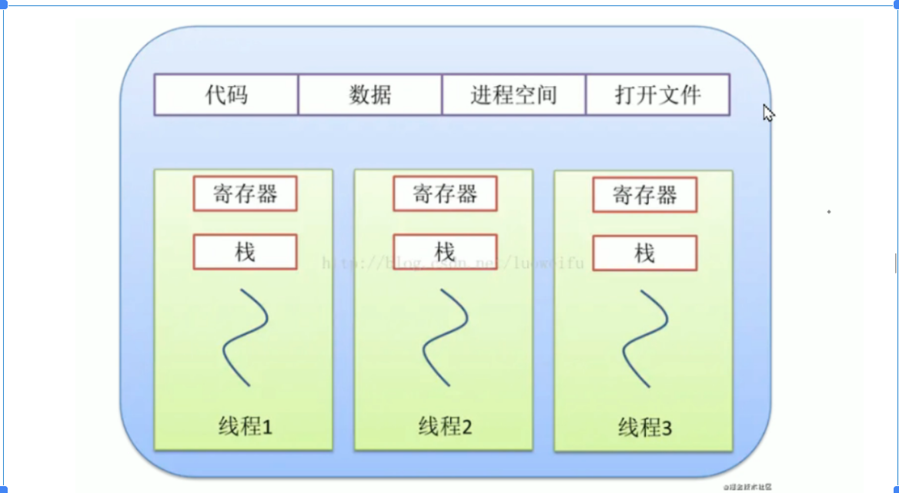
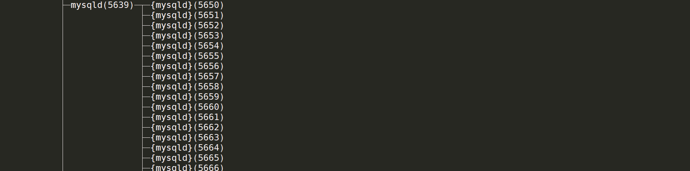
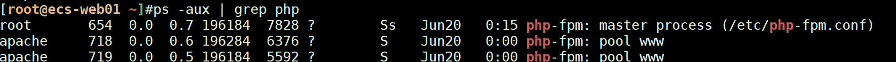
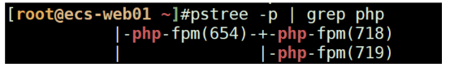
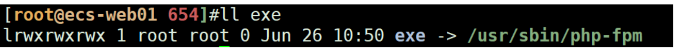
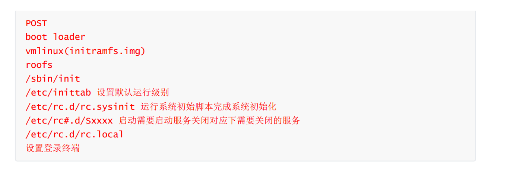
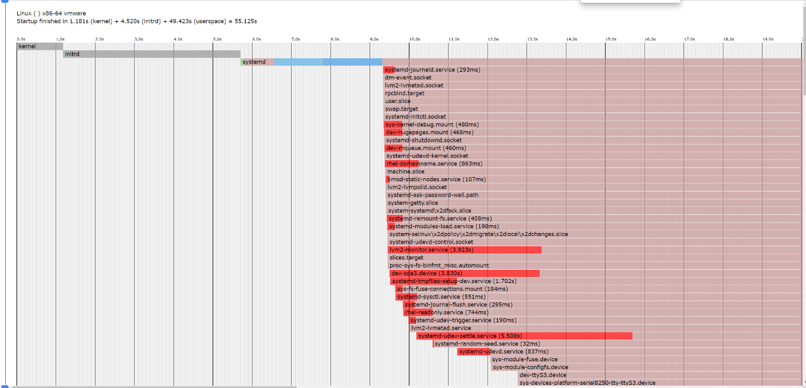

1.定时任务 1 2 3 4 5 6 7 8 9 10 11 12 13 14 15 16 17 18 19 20 21 22 23 24 25 26 27 28 enable --now crondsleep 30; /scripts/script.sh date 使用date -d now +%Y-%m-%d 或者date +%Fdate -d next-day +%Y-%m-%ddate -d tomorrow +%Y-%m-%ddate -d yesterday +%Y-%m-%d 或者date -d last-day +%Y-%m-%d 或者date -d "1 days ago" +%Y-%m-%ddate -d "30 days ago" +%Y-%m-%d
对应shell脚本 1 2 3 4 5 6 7 8 9 10 11 12 13 14 15 16 17 18 19 20 21 22 23 24 25 26 27 28 29 30 31 32 33 34 35 36 37 38 39 40 41 42 43 44 45 46 47 48 49 50 51 52 53 $1 $2 "hellodb" date =$(date +%Y-%m-%d_%H-%M-%S)if [ -d /backup/mysql ];then echo "dir created" else mkdir -p /backup/mysqlfi ${user} -p${passwd} ${dbname} > $path /"$dbname " .${date} .sqlecho "${date} -${dbname} .sql backup successfully" >> $path /backup.logdate =`date -d yesterday +%Y-%m-%d' ' %H-%M-%S`echo $date if [ -d /test/backup ];then echo "dir exist" else mkdir -p /test/backupfi ${date} .tar.gz /var/log/nginx/access.logmv nginx-${date} .tar.gz /backup/date =`date -d now +%Y-%m-%d' ' %H`echo $date >> /test/week4/meminfo.txtecho `cat /proc/meminfo | grep "^Mem" ` >> /test/week4/meminfo.txtdate =`date +%Y-%m-%d' ' %H-%M-%S`df -h | grep '^/dev/' | awk '{print $5}' | tr -d %`if [ $disk -ge 80 ];then echo "时间:${date} ,磁盘${disk_id} 使用率超过80，告警" | mail -s "disk safe" root@qq.comelse echo "时间:${date} ,磁盘${disk_id} 使用率未超过80，安全" | mail -s "warning" root@qq.comfi
2.图文并茂说明Linux进程和内存概念 Linux进程 其实是Linux系统运行时的一份副本，一个进程（process）其实就是Linux系统内的一个目录，目录位于/proc下

一个进程会单独占用一块内存空间（估计不大）

1 2 3 4 5 6 7 8 常见进程管理命令：
线程是程序执行的最小单位，一个进程由多个线程组成 1 2 pstree -p查看mysqld服务的线程：5639的Pid为整个mysqld服务的父进程，下面都是线程

进程使用内存问题 内存泄漏，内存超限（溢出），内存不足（OOM）
内存使用空间分为：用户态和内核态，用户空间+内核空间
内存泄漏：malloc分配了一定空间的内容，比如10M，但是没去占用，又不释放
磁盘内的文件需要被访问：一定要加载到内存中才能被访问

父进程654，就是所有php以及其子进程都是依赖systemd（1）-php-fpm（654）

相当于这个就是存在磁盘内的文件，现在被加载到内容中运行了，PID为654

Linux内存 内存是服务器内的重要的一个硬件指标，一般来说，一个程序或者服务在运行的时候，会生成一个或者多个进程，而进程就是运行在内存中的。
1 2 3 4 5 6 7 8 9 [root@master week4]in cs us sy id wa st
3.图文并茂说明Linux启动流程 1 2 3 4 5 6 7 8 9 10 11 Cent OS 6启动流程tty ，比如root登录就是tty0

BootLoader：操作系统引导的，引导启动到哪个OS
1 2 3 4 5 6 7 8 9 10 11 12 13 14 15 16 Cent OS 7

4.自定义systemd服务，检查/tmp文件个数 自定义一个systemd服务定时去其他服务器上检查/tmp/下文件的个数，如果发现数量有变化就记录变化情况到文件中。
1 2 3 4 5 6 7 8 9 10 11 12 13 14 15 16 17 18 19 20 21 22 23 24 25 26 27 28 29 30 31 32 33 34 35 36 37 38 39 systemd服务基本格式test true ls -l $path1 | grep "^-" | wc -l`sleep 30ls -l $path2 | grep "^-" | wc -l`echo "1:$diff1 ,2:$diff2 " echo $diff1 -$diff2 | bc`date =`date +%H-%M-%S`expr 0 - $diff3 `if [ $diff2 -lt $diff1 ];then echo "路径${path1} 减少了文件，数量为$num ，时间:$date " >> /tmp/record.logelif [ $diff2 -gt $diff1 ];then echo "路径${path1} 增加了文件，数量为$num ，时间:$date " >> /tmp/record.logelse echo "无变化，时间：$date " fi printf "%P\n" | sort > file1printf "%P\n" | sort | diff file1 >diff.txt
5.写Linux内核编译安装博客 Linux机器在某个发行版上编译安装指定的版本用途：为了适配不同应用的需求，需要应对使用更高的内核版本需要执行操作
6.总结5个自我觉得比较有用的awk的使用场景(持续更新) 比如在什么情况下用awk处理文本效率最高，发散题，至少写1个。
awk处理文本能力很强，常用的场景
1 2 3 4 5 6 7 8 9 10 11 12 13 14 15 16 17 18 19 20 21 22 23 24 25 26 27 28 29 30 31 32 '{print $1}' /var/log/nginx/access.log | sort | uniq -c | sort -nr | hrad -n 5 cat /var/log/nginx/access.log | awk -F "[[ ]" '{print $1,$5}' | head -n 5'{state[$NF]++} END {for (i in state) print i,state[i]}' ':' '/\/bin\/bash/{print $1 "," $7}' /etc/passwdrm -f `docker ps | grep nginx | awk '{print $1}' `link mysql:mysql -p 8003:80 -v /test/matomo:/var/www/html -d `docker images | grep matomo | awk '{print $3}' `ls -al *.jpg | awk '{sum+=$5} END {print sum}' '/netmask/{print $2}' df -h | grep "^/dev" | awk '{print $5}' | tr -d %df -h | awk '/\/dev\//{print $5}' | tr -d %'!/^#|^$/' /etc/fstab'/^#/' /etc/fstabwhile 循环，bash命令行完成'BEGIN{i=1;sum=0;while(i<=100){sum+=i;i++};{print sum}}' --->5050